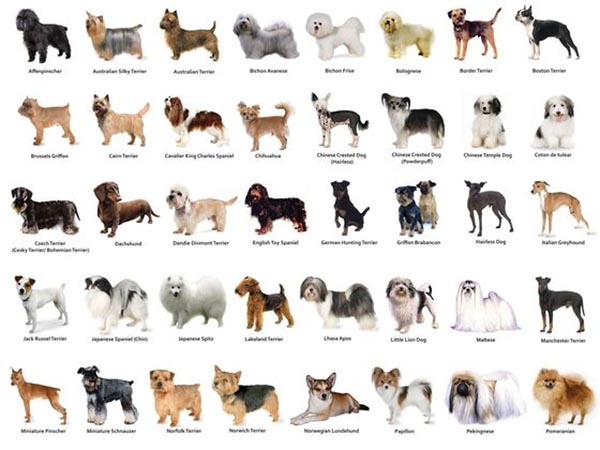
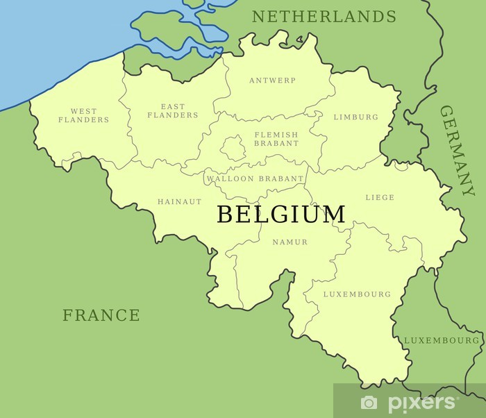

Soorten
Hoofdgroepen:
- Herdershonden en veedrijvers
- Pinschers, schnauzers, molossers en sennenhonden
- Terriërs
- Dashonden
- Spitsen en oertypen (bijvoorbeeld sledehonden en Europese keeshonden)
- Lopende honden en zweethonden (bijvoorbeeld Beierse bergzweethond en dalmatiër
- Voorstaande honden (bijvoorbeeld kleine münsterländer, griffon Korthals en Engelse setter
- Retrievers, spaniëls en waterhonden
- Gezelschapshonden (bijvoorbeeld poedels en chihuahua's)
- Windhonden


Top 10 hondenrassen in België
- Duitse herder
- Mechelse herder
- Golden retriever
- Vlaamse koehond
- Chihuahua
- Labrador retriever
- Berner sennenhond
- Bordercollie
- Rottweiler
- Duitse dog